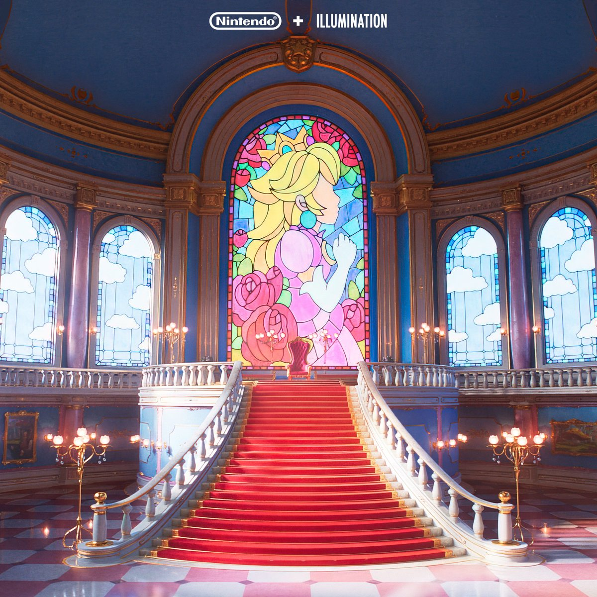

Super Mario Bros. O Filme ganha novo trailer destacando Peach, Donkey Kong e Luigi

O filme tem previsão de estreia nos cinemas para 2023
Após ter revelado seu primeiro trailer há um pouco mais de um mês, a Universal Pictures publicou um novo trailer de Super Mario Bros. O Filme, dando destaque para a Princesa Peach, Donkey Kong Luigi, além de diversos elementos do universo de Super Mario Bros.
Também foi publicado um novo pôster, que você confere a seguir:

Na dublagem original em inglês, o filme conta com atores famosos de Hollywood como Chris Pratt fazendo a voz de Mario, enquanto Jack Black fará a voz de Bowser. Charlie Day fará a voz de Luigi, irmão do Mario e Anya-Taylor Joy fazendo a voz da Princesa Peach. O filme ainda contará com as vozes de Keegan-Michael Key, Seth Rogen, Fred Armisen, Sebastian Maniscalco, Charles Martinet e Kevin Michael Richardson. Super Mario Bros. O Filme irá estrear dia 7 de abril de 2023 nos Estados Unidos e em algum momento do mesmo ano no Brasil.
Fonte:crunchyroll